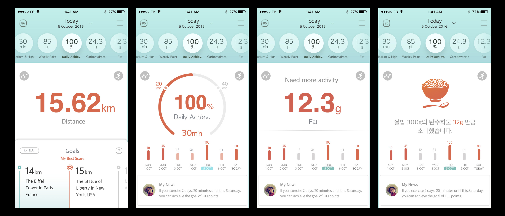

벤처 기업에서는 user research를 할 수 있는 시간과 예산이 부족하다. 그러므로 사용자가 필요하리라 판단할 수 있는 근거를 부분 집단에서 발췌할 수 밖에 없는 한계가 생긴다. 휘트닷라이프의 주요 고객은 시장의 잠재 고객보다는 유통업체의 바이어였다. B2C로 마케팅 비용을 최소화하면서 유통 전략으로 물건을 판매하는 것이 첫 시장 진출의 전략이었다. 바이어는 기존 경쟁사의 기능 뿐만 아니라 휘트닷라이프의 특이 기능을 합쳐 다양한 기능으로 마케팅 전략을 취하고자 했다. 그래서 모바일 UI도 다양한 기능이 첫 화면에 모두 디스플레이 되도록 설계되었다.
모든 정보를 한 화면에 담아서 보여주기
모든 정보를 한 화면에 담아서 보여주자 화면이 복잡해지는 문제가 생겼다. 복잡해도 사용하는데 문제가 없는 제품 UI도 많다. 그러나 복잡하면서 전문 용어(MET, 운동강도, 여러가지 단위)가 나오면서 어렵다는 지적이 나왔다. 여러 종류의 단위뿐 아니라 그래프가 있으니 수학 교과서를 보는 느낌이랄까.
다양한 기능을 한 화면에 보여주기를 포기할 수 없는 사업전략 때문에 디자인을 단순하게 하고 싶어도 못하는 상황이었다. 중요한 정보는 크게, 덜 중요한 정보는 작게 표현하는 방법으로 레이아웃을 구성했다. 다양한 정보는 각 탭을 터치해서 보는 방식으로 변경했다. 가로 swiping으로 여러 종류의 기능(데이터)를 보여주는 인터렉션이다. 한번에 한 가지 정보를 보되, 여러종류의 데이터가 있음을 암시하는 탭을 상단에 위치시켰다. 각 데이터를 표현하는 단위가 다르므로 그래프를 서로 다른 형태로 디자인하여 다른 종류의 데이터임을 각인시키려 했다.
각 기능의 추가 정보, 시간대별 정보로 보기 한번에 모든 걸 기획후 디자인하는 것이 아니라, 디자인 하다가 새로운 기능이 기획되어 추가되면 기존 디자인에 덧붙여지는 식은 골치가 아프다. 기존 기능과 상반될 때, 화면을 모두 다 재디자인 할 수 있는 시간이 없을 때는 어딘가에 집어넣어야 하는데, 공간이 없을 때, 공간이 있지만 사용자가 찾기 힘든 구역일 때 등 고민 요소가 더 많아진다.
기존의 정보는 활동 데이터를 칼로리, 운동 강도, 시간, 거리 등으로 변환해 보여주는 정보였다. 추가되는 기능(데이터)는 수면, 체중, 체성분, 걸음수 데이터로 새로운 종류의 기능이었다. 이질적인 데이터 종류를 한 화면에서 보여주기 위해서 화면의 색을 달리하는 것으로 해결 방법을 찾으려고 했다.
다국어는 번역업체에 의뢰에 작업을 진행했지만 최종 문구가 전달되는데 시간이 걸린다. 화면에서 글자 개수가 너무 많은지 글자 가독성이 좋은지를 테스트하기 위해서는 7개국어를 미리 테스트해 보는것이 중요했다. 그래서 구글 스프레드쉬트 함수를 이용해 7개국어를 자동 번역하게 만들었다. 함수 GOOGLETRANSLATE() 참조
수많은 바이어 피드백의 결과 새로운 기능 추가, 색 변경 등을 거쳐 완성하였다. 사용자 리서치를 현장에서 할 수 없는 관계로 사용자 행동 패턴을 파악하기 위한 몇 가지 코드를 추가하였다.
이벤트 4가지의 결과는 자세하게 공개 할수는 없다. 그러나 Fabric으로 사용자의 사용 패턴을 보면 사용자는 한번에 대략 2분 30초 정도 앱에 머문다. 홈화면 외에 다른 화면으로 접근이 어려운 것을 확인할 수 있었다.
